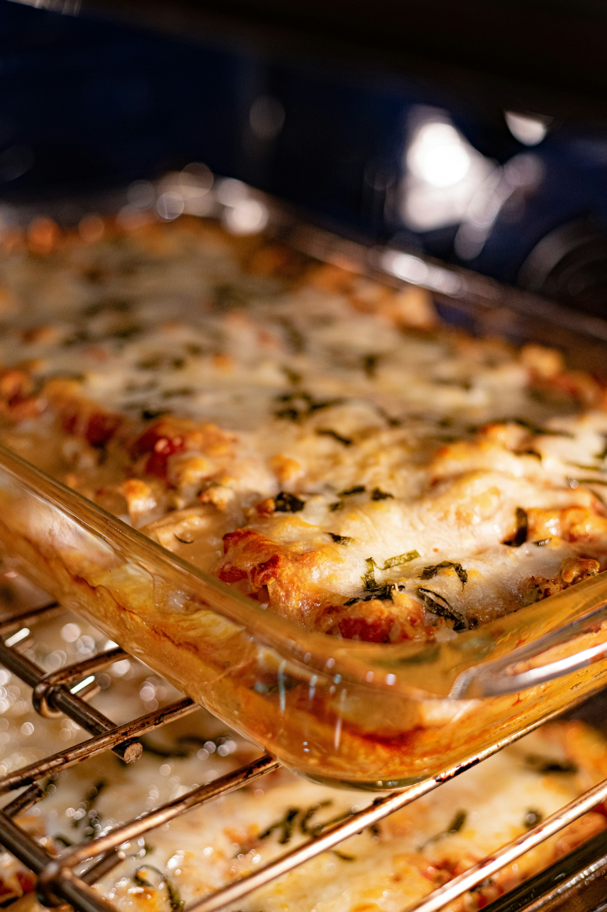

Lasagna

Ingredients:
For the Meat Sauce:
- 1 pound (about 500g) ground beef
- 1 onion, finely chopped
- 3 cloves garlic, minced
- 1 can (28 ounces) crushed tomatoes
- 1 can (14 ounces) tomato sauce
- 2 tablespoons tomato paste
- 1 teaspoon dried oregano
- 1 teaspoon dried basil
- Salt and pepper to taste
For the Ricotta Filling:
- 2 cups ricotta cheese
- 1 egg
- 1/4 cup fresh parsley, chopped
- Salt and pepper to taste
Other Layers:
- 9 lasagna noodles, cooked according to package instructions
- 3 cups shredded mozzarella cheese
- 1 cup grated Parmesan cheese
Instructions:
- Prepare the Meat Sauce:
- In a large skillet or saucepan, brown the ground beef over medium heat.
- Add chopped onion and minced garlic, cooking until the onion is softened.
- Stir in crushed tomatoes, tomato sauce, tomato paste, oregano, basil, salt, and pepper.
- Simmer the sauce for about 20-30 minutes, allowing the flavors to meld.
- Prepare the Ricotta Filling:
- In a bowl, combine ricotta cheese, egg, chopped parsley, salt, and pepper. Mix well.
- Assemble the Lasagna:
- Preheat your oven to 375°F (190°C).
- Spread a thin layer of meat sauce on the bottom of a baking dish.
- Place a layer of cooked lasagna noodles over the sauce.
- Spread half of the ricotta filling over the noodles.
- Add a layer of meat sauce and sprinkle with mozzarella and Parmesan cheese.
- Repeat the layers, finishing with a final layer of meat sauce and a generous topping of mozzarella and Parmesan cheese.
- Bake:
- Cover the baking dish with aluminum foil and bake in the preheated oven for 25-30 minutes.
- Remove the foil and bake for an additional 10-15 minutes or until the cheese is bubbly and golden.
- Rest and Serve:
- Allow the lasagna to rest for 10-15 minutes before slicing. This helps set the layers.
- Serve warm and enjoy!
Back